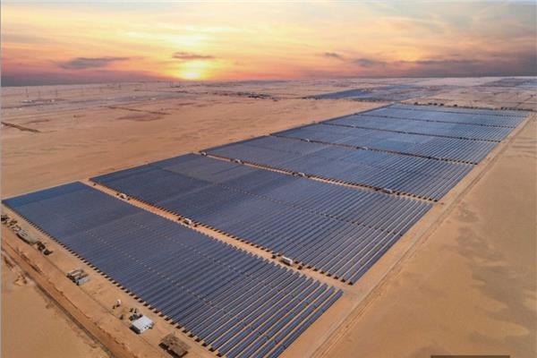

تُعد محطة الطاقة الشمسية في بنبان بأسوان واحدة من أكبر محطات الطاقة الشمسية في العالم، وأحد أبرز مشروعات الطاقة المتجددة في مصر. يمثل المشروع خطوة هامة نحو تحقيق أهداف الدولة في تنويع مصادر الطاقة، وتقليل الاعتماد على الوقود الأحفوري، وتحقيق التنمية المستدامة. تم تنفيذ هذا المشروع الضخم في إطار استراتيجية الحكومة المصرية لتنمية قطاع الطاقة المتجددة، وتعزيز مكانة مصر كداعم رئيسي للطاقة النظيفة في منطقة الشرق الأوسط وشمال إفريقيا. تتوزع محطة بنبان على مساحة 37 كيلو مترًا مربعًا في منطقة بنبان بمحافظة أسوان، وهي واحدة من أضخم المشروعات في العالم التي تستخدم الطاقة الشمسية كمصدر رئيسي للإنتاج الكهربائي. بدأ تنفيذ المشروع في عام 2017، وتم تشغيله بشكل كامل في نهاية عام 2019، ليُسهم في توليد ما يصل إلى 1.8 جيجاوات من الكهرباء. هذا الحجم الهائل من الطاقة يجعل محطة بنبان تمثل حوالي 80% من إجمالي طاقة الطاقة الشمسية المنتجة في مصر. وقد تم تنفيذ هذا المشروع تحت إشراف الحكومة المصرية، بالتعاون مع مؤسسات تمويل دولية مثل البنك الدولي، والبنك الأوروبي لإعادة الإعمار والتنمية، والوكالة الفرنسية للتنمية. يُعتبر المشروع نموذجًا ناجحًا للتعاون بين القطاعين العام والخاص، حيث يضم أكثر من 30 شركة محلية وأجنبية، وأكثر من 40 محطة فرعية تعمل بشكل متكامل لتوفير الكهرباء النظيفة. الطاقة المنتجة من محطة بنبان تُستخدم لتغذية الشبكة الكهربائية القومية، ويستفيد منها الملايين من المواطنين في مختلف أنحاء البلاد. ومن المتوقع أن يُسهم المشروع في توفير حوالي 10 ملايين طن من انبعاثات ثاني أكسيد الكربون سنويًا، مما يعزز من الجهود المصرية في مواجهة التغيرات المناخية وتحقيق أهداف اتفاقية باريس للمناخ. كما يعزز المشروع قدرة مصر على تصدير الطاقة الكهربائية إلى الدول المجاورة في المستقبل، مما يُسهم في تعزيز دور مصر كمركز إقليمي للطاقة. من حيث التكلفة، بلغت استثمارات مشروع بنبان نحو 2 مليار دولار أمريكي، وهي تُعد من أكبر الاستثمارات في قطاع الطاقة المتجددة في مصر. وقد تم تمويل هذا المشروع من خلال قروض ميسرة ومنح دولية، بالإضافة إلى تمويلات من القطاع الخاص المحلي والدولي. وقد أدى المشروع إلى توفير آلاف فرص العمل المباشرة وغير المباشرة، سواء خلال مرحلة البناء أو في مرحلة التشغيل والصيانة. من ناحية أخرى، يعكس مشروع بنبان التزام مصر بتطوير بنية تحتية حديثة في قطاع الطاقة، ويُعد إضافة استراتيجية لقطاع الكهرباء في مصر. ففي الوقت الذي تزداد فيه أسعار الوقود الأحفوري عالميًا، فإن الاعتماد على الطاقة الشمسية سيساعد مصر في تقليل تكاليف الإنتاج الكهربائي، ويُساهم في تعزيز استقلالها في مجال الطاقة. لم يتوقف تأثير مشروع محطة بنبان عند حدود الطاقة الكهربائية فقط، بل ساهم في تنمية المنطقة بشكل عام، من خلال تحسين البنية التحتية المحلية، وتوفير مرافق صحية وتعليمية جديدة، وزيادة فرص التدريب الفني والتقني لشباب أسوان في مجالات الطاقة المتجددة. كما أسهم المشروع في جذب مزيد من الاستثمارات إلى المنطقة الجنوبية من مصر، وزيادة حركة الاقتصاد المحلي. إن محطة بنبان تُعد مثالًا بارزًا على قدرة الدولة المصرية على تنفيذ مشروعات ضخمة وناجحة في قطاع الطاقة، وتُجسّد التوجه نحو الطاقة النظيفة والمستدامة، حيث تظهر الإرادة السياسية لتحقيق تحول حقيقي في طريقة توليد الطاقة، بعيدًا عن المصادر التقليدية الملوثة للبيئة. كما أن هذا المشروع يُعتبر خطوة كبيرة نحو تحقيق الاستقلال الطاقي، وتوفير طاقة نظيفة ومستدامة للأجيال القادمة. من المؤكد أن مشروع بنبان سيظل علامة فارقة في تاريخ الطاقة المتجددة في مصر، ويُعد نموذجًا رائدًا يحتذى به في المنطقة والعالم. فهو لم يُحسن من قدرة مصر على توليد الكهرباء فحسب، بل أيضًا ساهم في تحسين نوعية الحياة من خلال التقليل من التلوث البيئي، ودعم الاقتصاد الوطني، وتعزيز موقف مصر في المبادرات الدولية الخاصة بالاستدامة والتغير المناخي.
